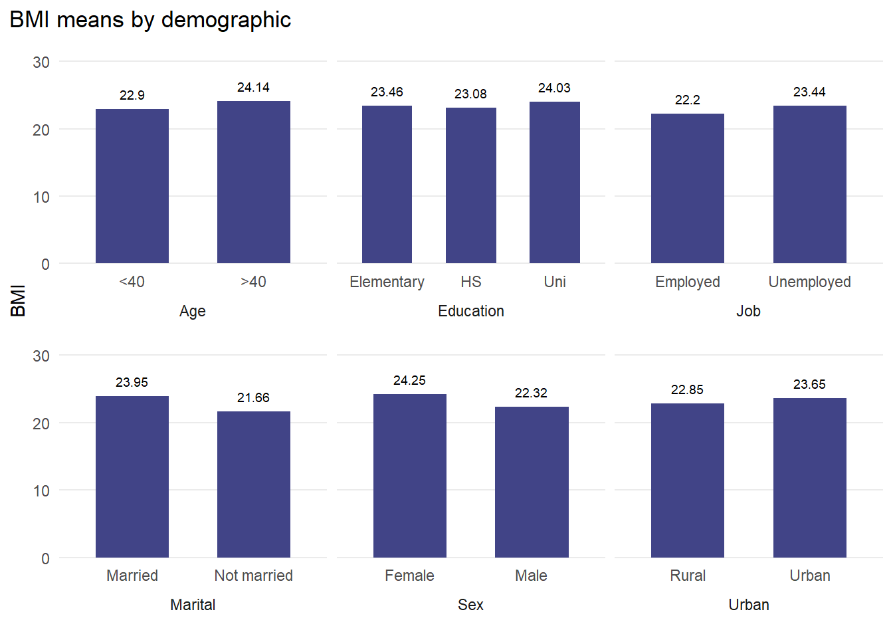

| Mean | Std. Dev. | ||
|---|---|---|---|
| BMI | 23.3 | 4.5 | |
| N | Pct. | ||
| Age | <40 | 19441 | 64.9 |
| >40 | 10493 | 35.1 | |
| Sex | Female | 15723 | 52.5 |
| Male | 14211 | 47.5 | |
| Marital | Married | 21824 | 72.9 |
| Not Married | 8110 | 27.1 | |
| Urban | Rural | 11987 | 40.0 |
| Urban | 17947 | 60.0 | |
| Education | Elementary | 9256 | 30.9 |
| High_school | 16381 | 54.7 | |
| University | 4297 | 14.4 | |
| Job | Employed | 2669 | 8.9 |
| Unemployed | 27265 | 91.1 |
IFLS BMI MAIHDA
Intersectionality is the study of how multiple sociodemographic identities intersect and interact to create unique experiences of discrimination and privilege that result in inequalities in individual outcomes. Intersectionality makes visible the experiences of hidden marginalized populations.
From quantitative data analysis perspective, a natural approach to study intersectional sociodemographic inequalities in individual outcomes is to estimate linear regressions of the individual outcome of interest on their sociodemographic characteristics and their interactions. As we introduce further sociodemographic characteristics, it proves statistically and interpretationally challenging to also introduce more and more interactions, many imprecisely estimated parameters and risk of type I errors. As a result, interactions effects and therefore intersectionality in individual outcomes is typically under explored, running the risk of misunderstanding or even missing important marginalized populations.
Intersectional multilevel analysis of individual heterogeneity and discriminatory accuracy (MAIHDA) aims to address these challenges, a systematic approach to explore many and complex interaction effects. Intersectional MAIHDA involves an innovative application of two-level linear regression of individual outcomes where individuals are modeled as clustered in 10s or even 100s of strata defined by the combinations of their sociodemographics characteristics, interest lies in studying how mean outcomes vary across strata. The approach was proposed by Evans et al. (2018) and has been further developed by Evans, Merlo, Leckie, and others.
Data
Data were drawn from wave 5 of Indonesia family life survey (IFLS). Sample consists of 29934 respondents after being cleaned. The outcome is toothache experience. The sociodemographic characteristics are: age, sex, marital, urban, education, job.

Strata
The strata is defined by combination of age, sex, marital, urban, education and job, resulting in 94 theoretical strata. The individual BMI experience are now viewed as clustered in strata, the variables defining the strata are elevated from individual to stratum level characteristics. Intersectional strata identities and even the characteristics defining them are no longer modeled as personal characteristics (risking “blaming the victim”), but are now modeled as social contexts viewed as encompassing the broader shared social experiences of individuals in each strata.
Model fit
Model null measures the extent to which individual outcome heterogeneity is explained by sociodemographic intersections vs other factors. Optimally predicts the mean outcome for each stratum.
Model full decomposes sociodemographic mean outcomes into additive and non-additive effects and measures relative importance of interactions. Optimally predicts the strata interaction effects with built in control for type I errors of inference.
Model is fitted by maximum likelihood estimation (MLE).
| Mental health | Mental health | |||
|---|---|---|---|---|
| Predictors | Estimates | CI (95%) | Estimates | CI (95%) |
| Intercept | 23.13 | 22.77 – 23.52 | 20.14 | 19.63 – 20.67 |
| Age: >40 | 1.32 | 0.94 – 1.71 | ||
| Female | 1.81 | 1.45 – 2.18 | ||
| Married | 1.61 | 1.23 – 1.99 | ||
| Urban | 0.65 | 0.28 – 1.03 | ||
| Education: High school | 0.23 | -0.21 – 0.67 | ||
| Education: University | 1.14 | 0.65 – 1.61 | ||
| Job: Employed | -0.37 | -0.75 – 0.03 | ||
| Random Effects | ||||
| σ2 | 17.42 | 17.52 | ||
| τ00 | 2.78 strata | 0.55 strata | ||
| ICC | 0.14 | 0.03 | ||
| N | 94 strata | 94 strata | ||
| Observations | 29853 | 29853 | ||
| Marginal R2 / Conditional R2 | 0.000 / 0.141 | 0.104 / 0.141 | ||
| Measure | Value |
|---|---|
| VPC | 13.62% |
| VPC adj | 3.04% |
| PCV | 80.15% |
Variance partition coefficient (VPC) measures the proportion of individual heterogeneity which lies between strata. The variance in individual BMI is 13.62% between strata means, and the rest 86.38% is attributable to unmodeled factors that vary across individuals. There is less variation between strata means, than within strata. Therefore, the strata has very low discriminatory accuracy. The strata tells us very little about individual toothache.
The VPC adjusted is just 3.04% which is too little for interaction effects to explain the variation.
Percentage change in variance (PCV) measures the degree to which we explain the overall sociodemographic variation by just the main effects. The variation of sociodemographic main effects is 80.15%, and thus only 19.85% of the variation explained by sociodemographic interaction effects.
The caterpillar plot gives a sense of not just the variablity in predicted strata means, but their individual imprecision, and their lack of statistical separation.